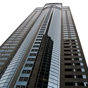
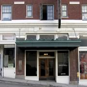

The Venue
Hotel Contempo

CAC speaking events and gallery exhibits take place inside Hotel Contempo, at 309 1st Avenue, in Downtown Seattle. Just a walk to the Space Needle, and a sampling of restaurants and shopping makes the venue a much sought-after location for conferences, year after year. Hotel Contempo is the perfect spot for a gathering of modern artists. Not only are the conference rooms and halls decked with breathtaking contemporary art and were commissioned to decorate them. From the Ross Monroe Purple suite filled wall to wall with paintings to the Tess Lessinger Sculpted Universe suite, with dozens of original sculptures, visitors are sure to be intrigued and comforted during sculptures, but the individual rooms are as unique as the renowned artists who their stay at Hotel Contempo.

Phillips of Bell town
Situated amongt the hip, youthful culture of Downtown Seattle, Phillips of Belltown is the place to be any time of the day or night. Choose from Jazz and Rock music at the various music venues, and shop until you drop at an assortment of thrift stores and upscale boutiques. The hotel itself is a historical gem, with architectural achievements in every beam, brick, and support.

The Otter Renaissance Hotel
Hotel founder, Henry Chasings, had a love of otters, having been raised in an Alaskan village where otters played out his back door. As his tribute to the sea creatures of his early days, Henry was insistent upon having an otter in every hall, wall, and room inside the Otter Renaissance Hotel.

The Rage Hotel
Seattle’s South Lake Union district plays home to the ultra modern Rage Hotel, that is outfitted with a state-of-the-art computer and printing facility in the penthouse, and draws tech professionals from all over the world for business conferences and vacations, alike.

Gwendoline’s Fancy
In the heart of the West Edge district in Seattle, Gwendoline’s Fancy, named after a Navy submarine that got lost at sea in 1910, is a central landing place for history buffs who can immerse themselves in the Museum of History located in the hotel mezzanine. For those travelers who aren’t into history, there are plenty of other nearby sights to keep them entertained, including Pike Place Market and the Seattle Art Museum.


 Roux Mobile>>
Roux Mobile>>